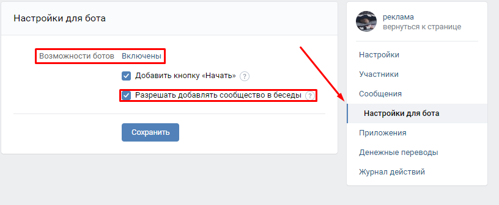
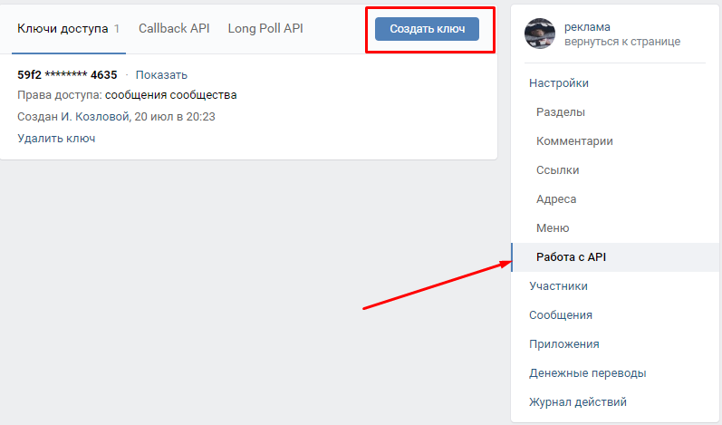

Лимиты и ограничения
Если вам нужен токен ПОЛЬЗОВАТЕЛЯ то получить его можно здесь.
- Вам нужно создать паблик, от имени которого вы будете слать.
- Нужно настроить его как бота (Разрешить сообщения, добавить возможность добавления паблика в беседы), сделать это можно в настройках.
(Управление>Сообщения>Настройки для бота)

- Теперь нужно получить сервисный ключ, по которому программа будет получать доступ к сообщениям
(Управление>Настройки>Работа с API> кнопка создать ключ, выбираем доступ к сообщениям)

- Теперь важно не забыть добавить бота в беседы, для этого будет кнопка в меню паблика (на основной странице)

- Заполняем поле "Введите нужный для отправки текст" сюда соответсвенно пишем текст, который вы хотите слать
- Следом запоняем поле "Введите ключ нужной группы" тут указываем ключ, который мы получили в пункте 3
- "Интервал" это то, с какой частотой будут выполняться действия